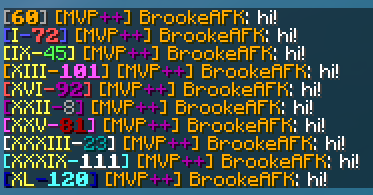

| Prestige |
| The notification that displays when a player prestiges for the first time. |
| Prestige | Mutliplier | XP Needed | Total XP Needed |
| I | 1 | 65,950 | 65,950 |
| II | 1.1 | 72,560 | 138,510 |
| III | 1.2 | 79,170 | 217,680 |
| IV | 1.3 | 85,750 | 303,430 |
| V | 1.4 | 92,330 | 395,760 |
| VI | 1.5 | 98,940 | 494,700 |
| VII | 1.75 | 115,440 | 610,140 |
| VIII | 2 | 131,900 | 742,040 |
| IX | 2.5 | 164,890 | 906,930 |
| X | 3 | 197,850 | 1,104,780 |
| XI | 4 | 263,800 | 1,368,580 |
| XII | 5 | 329,750 | 1,698,330 |
| XIII | 6 | 395,700 | 2,094,030 |
| XIV | 7 | 461,650 | 2,555,680 |
| XV | 8 | 527,600 | 3,083,280 |
| XVI | 9 | 593,550 | 3,676,830 |
| XVII | 10 | 659,500 | 4,336,330 |
| XVIII | 12 | 791,400 | 5,127,730 |
| XIX | 14 | 923,300 | 6,051,030 |
| XX | 16 | 1,055,200 | 7,106,230 |
| XXI | 18 | 1,187,100 | 8,293,330 |
| XXII | 20 | 1,319,000 | 9,612,330 |
| XXIII | 24 | 1,582,800 | 11,195,130 |
| XXIV | 28 | 1,846,600 | 13,041,730 |
| XXV | 32 | 2,110,400 | 15,152,130 |
| XXVI | 36 | 2,374,200 | 17,526,330 |
| XXVII | 40 | 2,638,000 | 20,164,330 |
| XXVIII | 45 | 2,967,750 | 23,132,080 |
| XXIX | 50 | 3,297,500 | 26,429,580 |
| XXX | 75 | 4,946,250 | 31,375,830 |
| XXXI | 100 | 6,595,000 | 37,970,830 |
| XXXII | 101 | 6,660,950 | 44,631,780 |
| XXXIII | 101 | 6,660,950 | 51,292,730 |
| XXXIV | 101 | 6,660,950 | 57,953,680 |
| XXXV | 101 | 6,660,950 | 64,614,630 |
| XXXVI | 101 | 6,660,950 | 71,275,580 |
| XXXVII | 200 | 13,190,000 | 84,465,580 |
| XXXVIII | 300 | 19,785,000 | 104,250,580 |
| XXXIX | 400 | 26,380,000 | 130,630,580 |
| XL | 500 | 32,975,000 | 163,605,580 |
| XLI | 750 | 49,462,500 | 213,068,080 |
| XLII | 1000 | 65,950,000 | 279,018,080 |
| XLIII† | 1250 | 82,437,500 | 361,455,580 |
| XLIV† | 1500 | 98,925,000 | 460,380,580 |
| XLV*† | 1750 | 115,412,500 | 575,793,080 |
| XLVI*† | 2000 | 131,900,000 | 707,693,080 |
| XLVII*† | 3000 | 197,850,000 | 905,543,080 |
| XLVIII*† | 5000 | 329,750,000 | 1,235,293,080 |
| XLIX*† | 10000 | 659,500,000 | 1,894,793,080 |
| L*† | 50000 | 3,297,500,000 | 5,192,293,080 |
| MAX† | 100000 | 6,595,000,000 | 11,787,293,080 |
|  |
| A demonstration of various prestige bracket and level colors. |